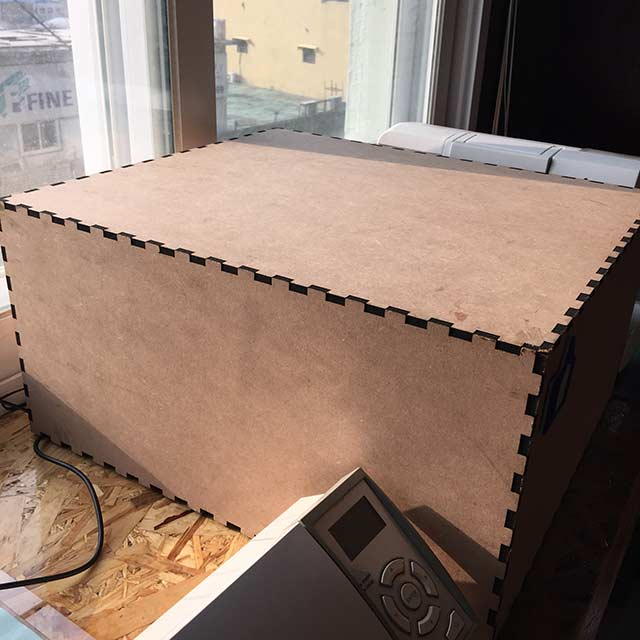

5. 3D Scanning and Printing
Design and 3D print and object that could not be made subtractively, 3D scan an object
Starting the bottom layer |
Side view of angle section(front panel) |
Front view of output |
Close view of output |
FINISHED 3D PRINTING |
CLOSER VIEW OF 3D PRINT |
I exported my design from 123D design of my final project ‘MYM’ which is an entertainment box. I tried to use without supporters.
with layer height 0.2 mm, print speed 80 mm/s, shell thickess of 20% I used the machine ‘Ultimaker’ which was very well maintained in FabLab Seoul at the moment. For addition I learned how to print and change settings for Makerbot 3D printers and XYZ printers.
3D modeling for final project
: middle piece done by looking at the reference of Robert Garitart from Fab Academy 2014.
with the radius of 7.5 it’s waiting for the steel rod to be in charge of core XY movement.
: Top pieces are going to holding the servo and therefore must be getting an exact distance of motor size.
: bearing was later on going to be use as essential part for controlling movement.
: I have tried diffrent kind of printers and this kind of guided me into how to treat material and how the software program is run
3D Printer I’ve tried
XYZ printing company : Davinci 1.0
Very good indeed, even with slower speed I think because it's working inside like a chamber system the extruder get steady heat and therefore get good result. The only bad point i found was It took a lot of time for slicing. Then, I realized that it was caused by my stl files that have several faces or internal edges that is very hard to be recognized by the program
Makerbot : Replicator 2X ( only one extruder, left extruder always not in good shape)
: This printer only could build small parts such as rings or bearings. any more than that size the raft seems to be unstablized and makes a whole mess.
Ultimaker : Seems alright with most of the efforts but without watching carefully at the printer sometimes lead to a disaster with filament stucking and extruder not working properly
Almond : The heating bed system for Almond is not very well with our Fab Lab as the heating temperature of the board only goes up to 90.
3D Scanning
It was pity that one of our kinect the 3D scanner was not in good shape to be used and I had to use the second option which is ‘Makerbot Digitizer’ the thing about the 3D scanner is that It’s not quite getting the image that I want and there are too many variables that make variation in object surfaces. In FabLab Seoul, we use laser-cut box made out of MDF to cover light for the moveject. As for doing this we don’t get blurry image behind |
|
MDF cover |
Makerbot 3D Scanning Ready to use |